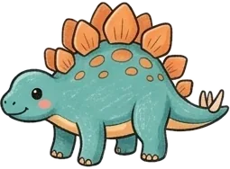
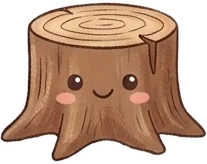
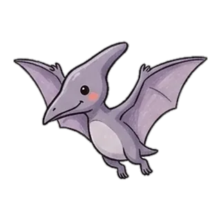
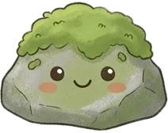
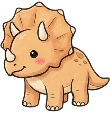

🔊
⚙️
① 첫 화면: 마을 지도글자 없이 장소 그림만. 숲·바다(공룡·고래), 집(목욕), 길(달리기), 정원, 무대(악기)를 톡 하면 티노·코코가 걸어가 놀이 시작. 오른쪽 아래 흐린 책상(글자 그리기)은 부모가 켜야 열림. 왼쪽 위 톱니는 길게 눌러야 열리는 부모 화면.





트리케라톱스

🗺️
🔊
② 숲 놀이: 공룡 만나기덤불·그루터기·바위 뒤에 공룡이 숨어 있어요. 톡 하면 까꿍 튀어나와 "트, 리, 케, 라, 톱, 스" 글자마다 읽고(읽는 글자가 커짐) 티노·코코가 놀라고 손뼉. 다 만나면 바다로 넘어가 고래 차례. 까꿍 + 그림책을 하나로 합친 놀이.
부모 화면 톱니를 길게 누르면 열림
아이 이름 하준 · 서준
단계 듣고 보기글자자음
좋아하는 것 공룡고래
책상 놀이(글자 그리기) 꺼짐
목소리 녹음 파일 사용
잘 시간 · 배경음악 · 이번 주 본 글자 ›
➖ 예전 게임 5개카드 닫기
R예전 러너
③ 부모 화면: 설정 + 숨긴 게임설정은 아이 화면에서 빼서 여기로. 지도에서 빠진 게임 5개는 지우지 않고 맨 아래 '예전 게임' 카드 안에 그대로 두어 언제든 열 수 있어요. (이름은 예시)